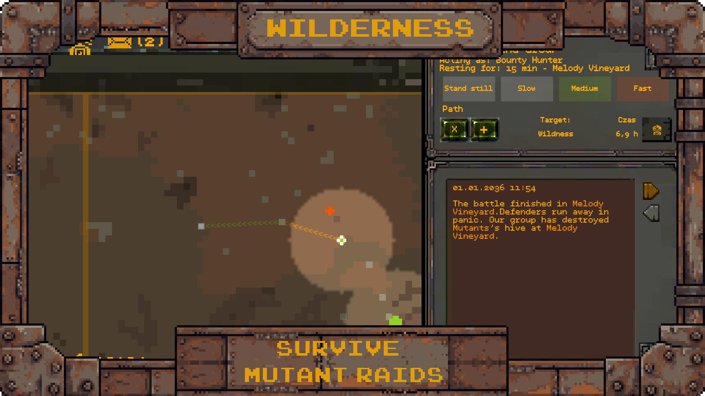
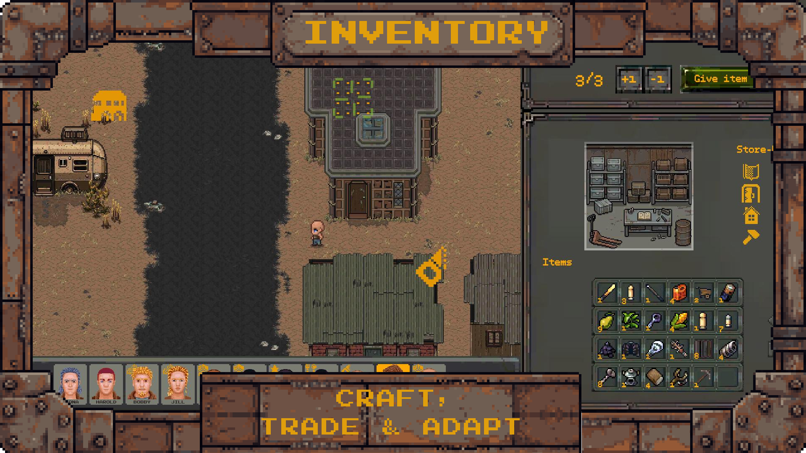

The Wasteland Manifesto
Survivor Psychology
Every settler has traits, needs, moods and a wallet. Good or bad, peaceful or restless, frugal or lavish. Ignore them and they quarrel, slack off, or walk out the gate.
Settlement Management
Lay out buildings on a grid, assign workers, keep the generators running, pay wages and feed everyone. Every system feeds the next one.
Risk vs. Reward
Expeditions bring loot, experience and rumors, and sometimes wounded people or no return at all. Beasts, bandits and radiation do not care about your plans.



Field Manual
Survivor's Handbook, Rev. 1990-something. Read it before the first winter.
- Time & the World
- Your Settlement & Buildings
- Settlers, Skills & Experience
- Morale & Psychology
- Needs & Services
- Economy & Production
- Electricity
- Wages
- Health & Illness
- Expeditions & Scavenging
- Encounters
- Trade & Gossip
- Combat
- Fortification & Defense
- Plunder & Conquest
- Beasts & Hives
- Survival Tips
01 // Time & the World
One tick is one real minute, about 3 minutes of game time. The world runs three times faster than real life: one real hour is three game hours.
- Hourly: electricity, illness and encounter checks.
- Daily: wages, paid in the evening around 17:00.
- Settlers sleep at night, travel is riskier, and wounded people resting at home slowly heal.
- The world goes on while you are away. Check the message log when you return.
- Some modes grant a protection period with no attacks. Trial games end after a set number of days.
The map is split into sectors with settlements, ruins, wilderness and more. You only see what lies within the sight range of your settlements and groups. Perception, Stealth and Spying decide who spots whom.
02 // Your Settlement & Buildings
A settlement has a grid of cells (some blocked by ruins, junk, rocks or trees), settlers, a storage for goods and cash, economic settings, electricity and buildings. Each building has locators: slots for a worker or a resident.
| Kind | Role |
|---|---|
| Control | Town Hall, Storehouse, Sheriff, Expeditions |
| Tech | Workshop, Blacksmith, Gunsmith, Electronics, Laboratory |
| Living / Rent | House, Tent, Dormitory, Mansion / Motel, Hotel |
| Food | Farm, Breeding, Windmill |
| Common / Gastronomy / Pastime | Shop, Marketplace, School, Church / Restaurant / Bar, Game Room, Casino |
| Medic | Drugstore, Policlinic, Hospital |
| Energy | Manual, Diesel, Solar generators |
| Defence | Fence, Wall, Blockpost, Bunker, Watchtower, Traps, Minefield, Alarm |
- Workplaces need qualified workers. Without one, the building is idle.
- Some buildings need power, some need supplies (a bar needs drinks, a restaurant needs food).
- Foundations cost about 10 times more work to build or remove.
- Damaged buildings work worse or not at all until repaired. Some cannot be repaired.
Building, renovating, demolishing
Construction needs materials from storage and labor from workers with the right skill (Architecture, Mechanics, Electronics, Chemistry, Farmer, and Strength helps). Work scales with complexity, size and material weight. You can renovate or upgrade damaged buildings. Demolition is a bit faster than building and may return part of the materials. Stopping work keeps the progress.
03 // Settlers, Skills & Experience
Every settler has physical traits (Strength, Perception, Agility, Courage, Cuteness), four mental scales (Good↔Bad, Peaceful↔Restless, Frugal↔Lavish, Generous↔Greedy), skills, a profession, an experience level, health and their own cash.
- New people may ask to join. Check skills, attitude and free housing first.
- Unhappy settlers may want to leave. Exiling people hurts the mood of others.
- When a settler dies, their belongings may go to the settlement, and loved ones grieve.
Skills
Combat, Gun, Heavy Weapons, Explosive, Hurling Weapon, Tactics, Climbing, Driver, Pathfinder, Survival, Trade, Speaker, Farmer, Mechanics, Electronics, Chemistry, Gambling, Medicine, Architecture, Thievery, Stealth, Spying, Knowledge. Skills improve with use across ten levels.
Professions & Experience
Professions (Chemist, Trader, Medic, Mercenary, Hunter, Thief, Soldier, Spy and more) hint at starting skills.
Levels: Greenhorn → Learner → Helper → Doer → Skilled → Veteran → Expert → Master → Leader → Pioneer.
04 // Morale & Psychology
Each settler has a happiness score. Happy settlers work well and stay. Unhappy settlers work poorly, leave or cause trouble.
| Cause | Effect |
|---|---|
| Needs | Meeting a need cheers them up. Ignoring it makes them angry. |
| Housing | No home is bad. Better housing is better. |
| Job | A job they like helps. Changing jobs affects mood. |
| Wages | Late or low pay causes anger. |
| Public buildings | Church, school and similar help. |
| Gifts | Giving an item cheers someone up. |
| Conquest / plunder | Winning boosts morale. Having home plundered hurts it. |
| Loot distribution | Unfair sharing breeds resentment. |
| Injury, exile, boredom | Injured, restless or upset-by-exile settlers lose mood. |
05 // Needs & Services
Settlers spend their own money on needs. A working building for a need earns you money. A missing or closed one makes people unhappy.
| Need | Building |
|---|---|
| Items, weapons, armor | Shop, Marketplace, Gunsmith, Blacksmith |
| Repairs | Workshop, Blacksmith |
| Drinks / meals | Bar / Restaurant |
| Entertainment | Game Room, Casino, Whorehouse |
| Faith / learning | Church / School |
| Medical care | Drugstore, Policlinic, Hospital |
| Rest | Barracks, Dormitory, Motel, Hotel |
Services need workers, power (some) and supplies. The economy is processed once per turn: each settler checks needs, finds a matching building and pays.
06 // Economy & Production
Item types: Food, Mechanical, Electronic, Chemical, Armor, Ammunition, Weapons, Fuel, Transport. From mech parts and tools to Uzis, AK-47s, grenade launchers, bulletproof vests, mules and horses.
- Production: needs the right building, materials in storage and a worker with the right skill. Stop any time.
- Storage: everything sits in one storage. Cash is kept in denominations and pays wages and trade.
- Food is eaten regularly. Running out hurts mood and health.
- Condition: weapons and tools wear out. Use repair services.
- The world has its own economy, reported globally.
07 // Electricity
- Manual generator: one worker gives 1 unit, two or more give 2.
- Diesel generator: burns fuel from storage every hour. No fuel, no power.
- Solar, wind, power stations: no fuel needed.
- Power is checked every hour. If production is below demand, some buildings shut down.
08 // Wages
- Paid once a day in the evening (17:00) from settlement cash.
- Three rates: builders and workers, guards, scientists.
- Unpaid workers get angry. Higher wages cheer them but drain money.
- Wages are not paid while the settlement is under attack.
09 // Health, Illness & Injuries
- Injuries reduce performance. Rest, medicine and medical buildings heal them.
- Conditions: Radiated, Poisoned, Sick, Plague. Illness strikes on average about once per six hours and spreads.
- Medical staff (Medicine skill) with tools and a drugstore, policlinic or hospital help.
- Wounded fighters must recover before going out again.
10 // Expeditions & Scavenging
A group is a team of settlers travelling together, carrying their own items and cash. Send them out through the Expeditions building.
- Set a destination, or set off right away.
- Rate of march: Standstill, Slow, Normal, Fast. Faster is quicker but riskier.
- Pathfinder and Driver skills, vehicles and animals help travel.
- When they return, you resolve loot, injuries, experience and moods.
| Attitude | Behavior |
|---|---|
| Tradesman | Never attacks |
| Scout | Avoids contact, tries to escape |
| Spy | Does not attack |
| Bounty Hunter | Attacks only criminals |
| Defender | Attacks only enemies |
| Invader | Attacks anyone not an ally |
| Bandit | Attacks everyone |
| Negotiators | Try to talk first |

11 // Encounters
Travelling or near home you may meet friendly or hostile travelers, wild beasts, hazards such as radiation, useful finds, or illness. Results depend partly on skill tests (Survival, Perception, Agility, Knowledge). Groups that meet on the map can collide: an encounter, a trade chance, a fight, or a chance to slip past.
12 // Trade & Gossip
- Own shop: sell to your settlers.
- Group barter: swap items between group and settlement.
- Foreign shops: trade with other settlements.
- Trade and Speaker skills improve prices. Value depends on weight, rarity and condition.
- Gossip: pay in a bar to learn about nearby locations, groups and people. A better bar means better information.

13 // Combat
Fight player-controlled (you see the field and give orders) or automatic (the game resolves it). Fighters form squads as attackers or defenders. You can take command, join a squad, set targets or retreat.
- Actions: Move, Enter Combat, Shoot (single, short burst, burst, continuous: more shots mean less accuracy and more ammo), Reload, Switch weapon, Hide.
- Weapons: melee, ranged, heavy. Range and ammo count.
- Armor reduces damage. Walls and obstacles block movement and sight.
- Skills: Combat, Gun, Heavy Weapons, Hurling, Tactics, Explosive. Traits: Agility, Perception, Courage, Strength.
- Badly wounded fighters can be incapacitated or killed. Low morale and courage make fighters flee.
- After the battle: the winner loots, survivors gain experience, the fallen sour the mood, and a battle report shows what happened.
14 // Fortification & Defense
During a battle at your settlement, routines like wages, electricity and illness are paused.
- Barriers (fence, wall, blockpost) block movement, and some also block sight. Design defenses deliberately.
- Use guard posts, watchtowers, traps and minefields.
- Keep armed, trained settlers at home and pay guards on time.
- Beasts attack settlements too. Plan for guards if your area is infested.
15 // Plunder & Conquest
- Plunder: send a group to raid buildings for goods. Thievery, Stealth and Perception help.
- Conquer: defeat the defenders and the location is yours, which cheers settlers.
- If your own home is plundered, settlers get angry.
- Locations can be damaged, destroyed or left as ruins.
16 // Beasts & Hives
Rats, crocodiles, mutants, wild dogs, giant ants, cannibals, big cats, birds, monsters and combat robots. They live in hives, send out groups, and hives grow and spread over time. Destroying a hive stops the nearby threat and may reward you.
17 // Survival Tips & Game Over
You lose when you have no settlements or no people able to continue, or when the trial period ends (trial games only).
- Food, housing and power first.
- Watch happiness and fix causes early.
- Diversify skills: a builder, a medic, a trader and some fighters.
- Defend smart: barriers, towers, armed settlers at home.
- Pay wages on time and keep a cash reserve.
- Do not over-expand. Every building costs workers, power and upkeep.
- Mind the night.
- Scout before plundering.
- Repair your gear.
Development Roadmap // What Are We Funding?
Every contribution on Patreon directly buys development time, high-quality graphics and sound assets, turning our core build into a massive post-apocalyptic universe.
- Underground Dungeons, Caves & Mines
New subterranean locations to explore, rare resources and unique subterranean hazards. - Deep Mission System
Story-driven quests and dynamic narrative events. - Settlement Conquest
Mechanics for raiding, territory expansion and wasteland diplomacy. - New Victory Condition: World Domination
Conquer the entire wasteland instead of just surviving. - Faction System
Join global conflicts, fight for influence and climb faction hierarchies. - Real-time Multiplayer
Compete or cooperate with other Leaders in real time.
Stretch Goals
- Supply Escort Missions & Trade Caravans
- Armed Combat Vehicles
- Additional Language Localizations